chap 1
GPU 和 NPU 是不同的
不同的领域需要不同的架构
指令集
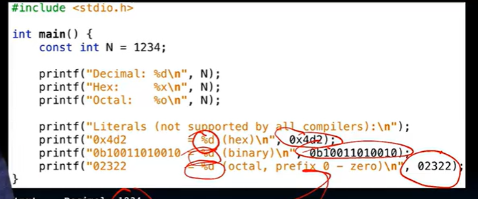
原来%d %o是进制
在前面加个0 是八进制
很奇怪的是 02322可以 但是0o322不可以
无符号整数
有符号整数

two 's complement 里程表更好看 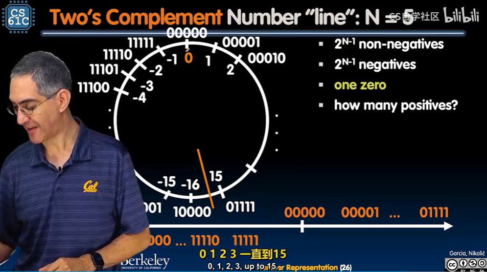
偏向编码 这个时候0就是偏置值

chap 2
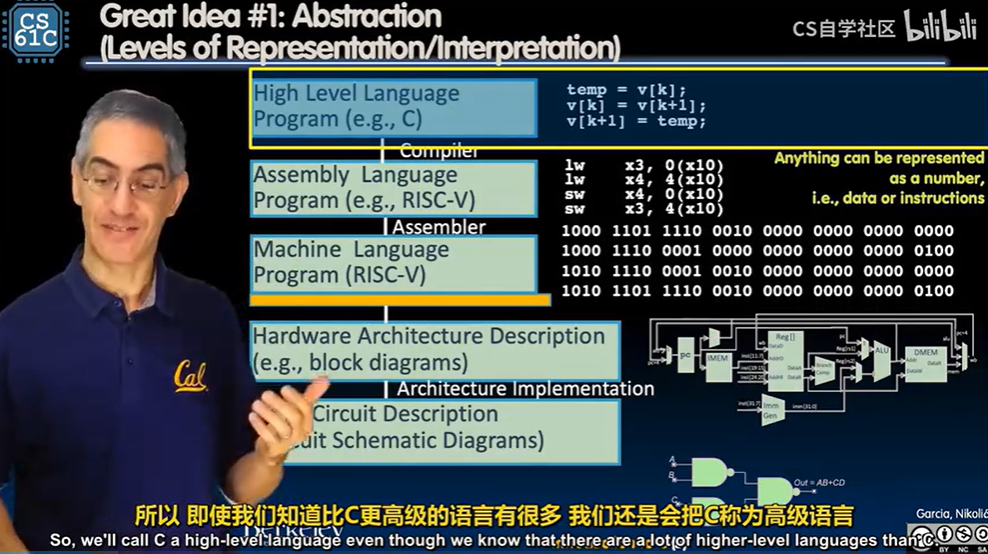
Go语言是什么
这个问题很经典 👍 我给你分几个角度讲清楚“解释型语言”和“编译型语言”的区别：
1. 执行方式不同
-
编译型语言（Compiled Language）
-
先把源代码 整体编译 成机器码（或字节码/目标代码），再运行。
- 编译过程发生在运行前。
- 示例：C、C++、Go、Rust
-
流程：
源代码 --编译器--> 可执行文件 --运行--> 结果 -
解释型语言（Interpreted Language）
-
源代码不会一次性编译成机器码，而是由解释器 逐行/逐段翻译并执行。
- 编译和执行几乎是同时发生的。
- 示例：Python、JavaScript、Ruby
-
流程：
源代码 --解释器--> 运行结果
2. 运行效率
-
编译型语言：
-
一次性编译成机器码，CPU 直接执行 → 运行速度快。
- 缺点是编译时间可能比较长。
-
解释型语言：
-
运行时才解释，每次执行都有额外的翻译开销 → 运行速度较慢。
- 但启动快、调试灵活。
3. 可移植性
-
编译型语言：
-
编译后得到的平台相关的二进制文件，移植时需要重新编译。
- 比如 Windows 上编译的
.exe，不能直接在 Linux 上运行。 -
解释型语言：
-
只要有解释器，就能运行相同的源代码。
- 比如 Python 脚本在 Linux/Windows/Mac 上几乎无需改动。
4. 调试和开发体验
-
编译型语言：
-
运行前必须编译，开发效率稍低，但错误能在编译时发现。
- 更适合大规模、高性能的项目。
-
解释型语言：
-
直接运行源代码，调试快，灵活性高。
- 适合脚本、快速原型开发。
5. 中间形态（混合型语言）
很多现代语言是 编译 + 解释混合模式，比如：
- Java：先编译成字节码（.class 文件），再由 JVM 解释/即时编译（JIT）成机器码。
- Python (PyPy, CPython)：一般逐行解释，但也可以用 JIT 技术提升性能。
- JavaScript (V8 引擎)：一边解释一边即时编译优化。
✅ 总结一句话：
- 编译型语言：“先翻译，再执行” → 高效，平台相关。
- 解释型语言：“边翻译，边执行” → 灵活，可移植性强。
spark
cython
REPL 是“Read-Eval-Print Loop”的缩写，中文常称为“交互式解释器”或“交互式命令行环境”。
它的工作流程是：
-
Read（读取）：读取用户输入的代码或命令。
-
Eval（求值）：对输入的内容进行计算或执行。
-
Print（输出）：将结果输出到屏幕。
-
Loop（循环）：继续等待下一次输入。
REPL 常见于 Python、JavaScript、Scala 等编程语言。它可以让你实时输入代码、立即看到结果，非常适合学习、调试和实验。比如在 Python 中，直接输入 python 命令就能进入 REPL 环境。
以 Python 的 REPL 为例：
在命令行输入 python 回车，进入交互式环境。 输入表达式，比如：
>>> 2 + 3
5
你可以继续输入代码，比如：
>>> print("Hello, world!")
Hello, world!
每输入一行，REPL 都会立即执行并显示结果。这就是 REPL 的典型用法。其他语言如 JavaScript（node）、Scala 也有类似的 REPL 环境。
docker
阿姆达尔定理（Amdahl's Law）是并行计算领域的重要理论，用于估算系统加速的极限。
内容如下：
假设一个任务中，部分可以并行加速，部分必须串行执行。
设任务中可并行部分占比为 P，串行部分占比为 1-P。
使用 N 个处理器时，最大加速比 S 为：
S = 1 / [(1-P) + P/N]
含义：
串行部分越小，整体加速效果越好。 即使处理器数量无限，系统加速也受限于串行部分。 阿姆达尔定理说明了并行化的瓶颈，指导我们优化程序时要尽量减少不可并行的部分。
是的，在 C/C++ 语言中，以 # 开头的语句（如 #include、#define、#ifdef 等）是“预处理命令”或“预处理指令”。
这些命令在编译之前由预处理器处理，用于：
包含头文件（#include） 宏定义（#define） 条件编译（#ifdef、#ifndef、#endif 等）
include 和 #include "file.h" 的区别在于头文件的查找路径：
include
只在系统头文件目录（如编译器自带的 include 路径）中查找 file.h。
常用于标准库头文件，如
include "file.h"
先在当前源文件所在目录查找 file.h，找不到再去系统头文件目录查找。 常用于项目自定义的头文件。 总结：
<...> 用于系统或第三方库头文件。 "..." 用于本地或自定义头文件。
#define PI (3.14159)
加个括号更安全 但是会有一些奇怪的副作用 比如函数的副作用会被使用两次
int main(void)
int main(int argc, char *argv[])
所以善用inttype

C语言有个goto语法 有点像BASIC
while循环检查不要基于浮点数
pi = 4.0 * atan(1.0)
chap 4
指令集架构（Instruction Set Architecture，简称 ISA）是指计算机处理器能够识别和执行的全部指令的规范和设计标准。它定义了处理器支持哪些操作（如加法、存储、跳转等）、指令格式、寻址方式、数据类型和寄存器结构等。
指令集架构是硬件和软件之间的接口：
对硬件来说，ISA 决定了 CPU 的设计和实现方式。 对软件来说，编译器和操作系统需要根据 ISA 生成和执行机器码。 常见的指令集架构有 x86、ARM、MIPS、RISC-V 等。
RISC-V 是一种开源的指令集架构（ISA），属于精简指令集计算（RISC）类型。它由加州大学伯克利分校于 2010 年提出，设计目标是简单、灵活、易于扩展，并且免费开放给任何人使用和修改。
指令集 ： 汇编语言组成

处理器主频是4GHz 则每0.25纳秒可以访问一次寄存器 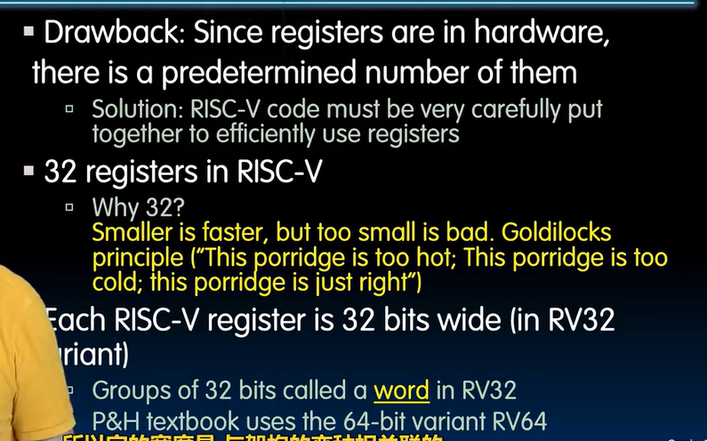
32位的（一个word） 4 字节
1位只能存储 1个二进制数字：0 或 1
寄存器路径主要包括：
指令从寄存器读出数据
数据在 ALU 进行运算
运算结果写回寄存器
寄存器和大脑一样快
RISC-V有32个寄存器 x0到x31
x0硬连线为0 永远存0
寄存器加减的汇编语言：
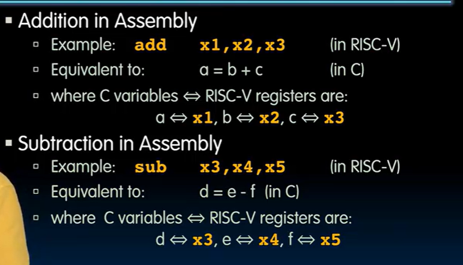
是注释
加立即数
ADDI rd, rs1, imm
(有一定范围 小于32位 需要其他信息)
减法立即数
加个负数呗
最常见立即数是0 就是x0
其实是把一个移到另一个寄存器
数据通常比32位小，但很少小于8位（例如char类型）。当所有数据都是8位的倍数时，处理起来很方便。
一个8位的数据块被称为一个字节（byte）。
内存地址实际上是以字节为单位进行寻址的
对于一个“字”（Word），它的地址被定义为该字中最右边那个字节（也就是最低有效字节，Least-Significant Byte, LSB）的地址。
这正是小端序的定义：最低有效字节存储在最低的内存地址。
“字地址”之间的间隔是4个字节，因为一个字是4个字节 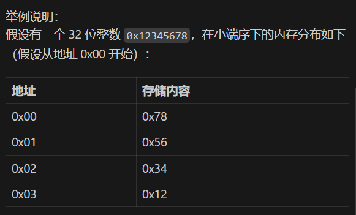 常见采用小端序的体系结构有：x86、x86-64、部分 ARM
小端序的优点：
处理低位数据时更高效
Data Transfer Instruction
内存层次结构 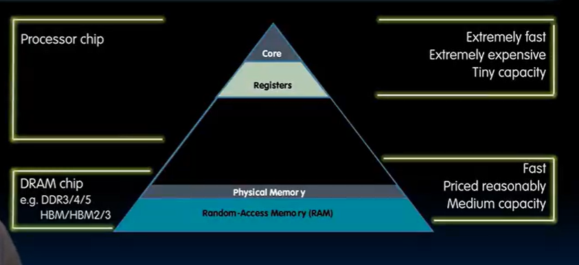
memory 内存 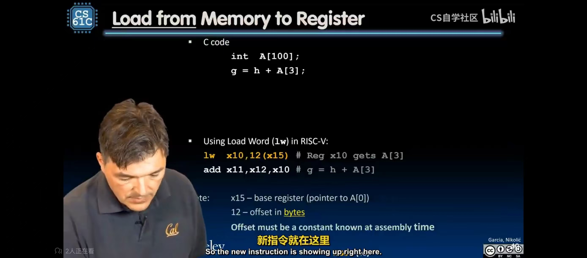
对每个字节寻址 存的是数字 数字是32位宽即4个字节
lw $rt, offset($rs)
$rt：目标寄存器（register target）—— 要存放数据的寄存器
$rs：基址寄存器（register source）—— 保存内存地址的基址
offset：偏移量（以字节为单位），用于定位内存中的具体地址
lw 一次加载 4 字节（32 位）
$s1 存的就是一个内存地址（或基地址）。
可以把 $s1 看成一个指针变量， lw 就是“通过指针取值”的操作。
相当于c语言
t0 = *(s1 + 1); // 每个 word 占 4 字节，所以 +4 表示下一个元素
偏移量必须是常量 在汇编时已知 是4的倍数（但是其实允许不对齐）
数据流从右向左 内存加载到寄存器

寄存器存到内存里
data从左到右
这俩存的取的都是32位（word）

写入目标寄存器的低字节位
如果传输的是带符号数
保留符号 把写入的那个低位字节取出最高有效位 扩展到这个字（4个字节）的所有高位

支持无符号数转移，不扩展符号位，就用零填充高位字节
即 lbu （unsigned byte loads） 语法与lb相同
sb不支持符号位扩展，他只是存一下
栈：后进先出（盘子）
Computer Decision Making 计算机决策
分支决策 改变指令执行顺序
if-statement:
有条件分支）
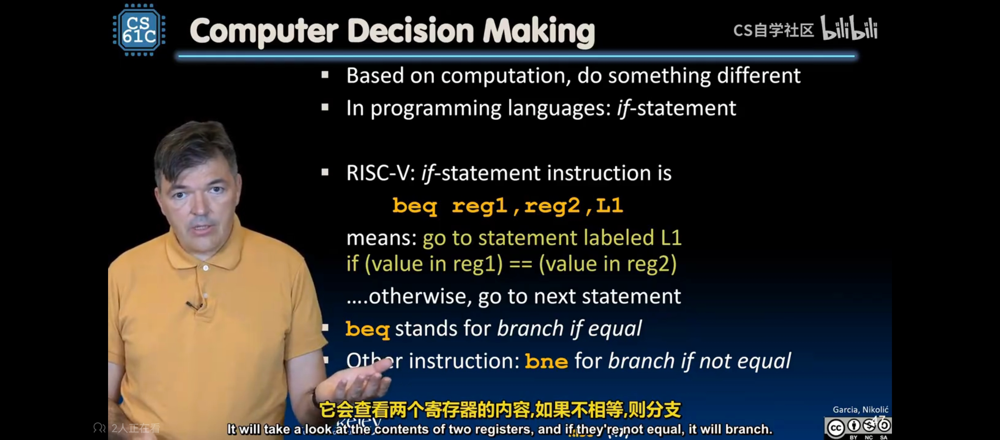 beq reg1 ,reg2 ,L1 比较reg1和reg2寄存器的内容 相同就去L1（L1是另一部分代码的地址）
不相同就去下一条指令
bne 正好相反 不同才跳转
blt less than分支
bge 大于等于时分支
无符号版本的bltu bgeu 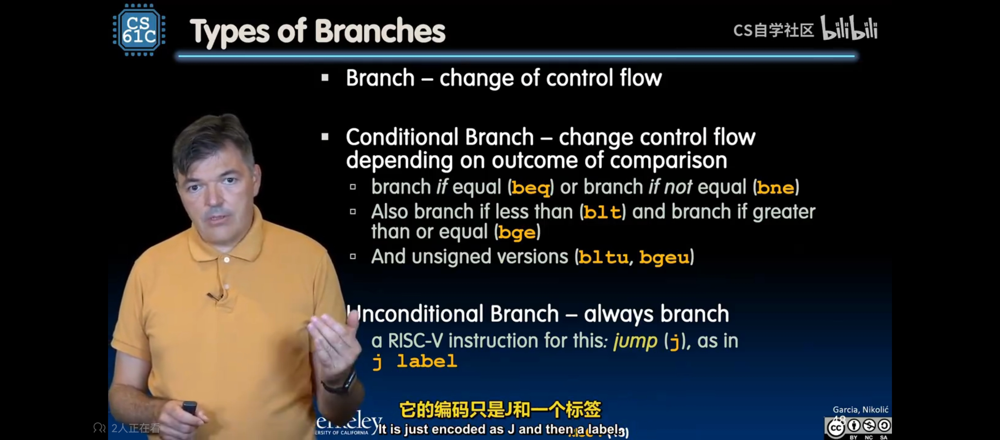
无条件分支 ）
就是跳转 对应always语句 像一个goto
可以用无条件分支做有条件分支 但是无条件分支跳转范围更大
为什么没有大于时或小于等于时分支 直接换一下寄存器位置就行
没有与立即数进行分支的指令

不写跳转就会走else

把x8复制到x9 不想破坏内容
还有初始化
地址+4 因为占了4个字节
逻辑指令 Logical Instruction
与算数指令数据通路一样 都是ALU
and 用于隔离
not 用xor和111111实现
左移sll 相当于乘法 补0
×12：×8 + ×4
右移srl 填0
当处理有符号位时：算数右移 复制符号位到右移产生的空位
程序
 可执行文件太大了，要放内存里
可执行文件太大了，要放内存里
内存按字节寻址
通常指令宽度为32位 顺序执行除非跳转
 PC 程序计数器 （Program Counter）： 一个特殊的寄存器，存储将要执行的下一条指令的字节地址
PC 程序计数器 （Program Counter）： 一个特殊的寄存器，存储将要执行的下一条指令的字节地址
control unit use PC to fetch instruction from Memory ，take a look at what is the instruction and execute it by using the data path and the Memory
更新PC 两条相邻指令差一个字 就是4个字节 PC加四字节或者跳转到新地址
 让代码更有可读性：
让代码更有可读性：
Load立即数指令： 把立即数加载到寄存器中 不与内存交互
nop 无操作 处理器等待 原地空转 x0作为目的寄存器的指令都是nop
函数调用

 ra 保存的就是执行完函数后下一步要执行的指令的地址
ra 保存的就是执行完函数后下一步要执行的指令的地址
返回地址（Return Address）： 是一条函数调用指令执行后，程序应当继续执行的那条下一条指令的地址（PC 值）
当你“跳到函数去执行”时，
你必须记住“回来以后该从哪继续执行”。
这个位置的地址（通常是 PC + 4）就是“返回地址”。
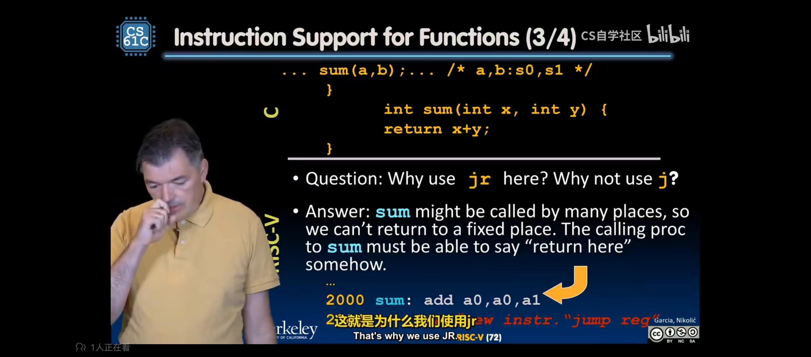 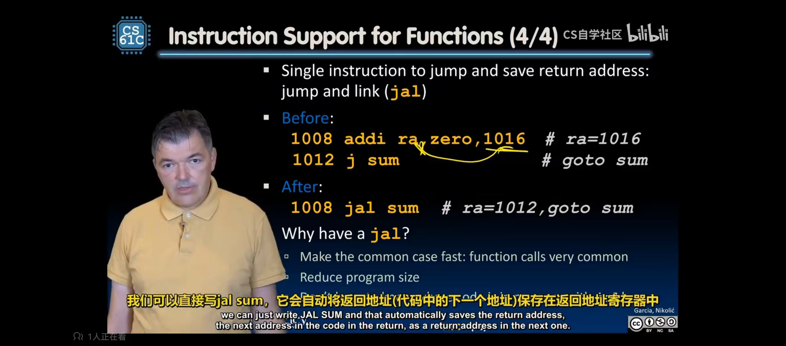
实际的指令：
-
jal rd, label jump-and-link
-
jalr rd,rs,imm jump-and-link-register （其他都是伪指令）
| 指令 | 含义 | 常用于 |
|---|---|---|
jal rd, label |
跳转到立即数偏移地址（PC 相对），并把返回地址写入 rd |
函数调用 |
jalr rd, offset(rs1) |
跳转到寄存器 rs1 + offset 指定的地址，并把返回地址写入 rd |
函数返回、间接跳转 |
在 RISC-V 汇编中，ret 是一个伪指令，展开后是：
jalr x0, 0(ra)
跳转到 ra 中保存的返回地址，不保存新的返回地址（因为 rd=x0）
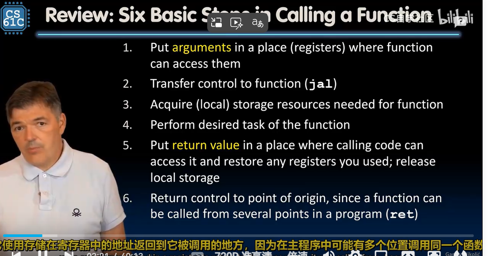
函数调用之前，把寄存器中的旧值存到内存里，就是stack 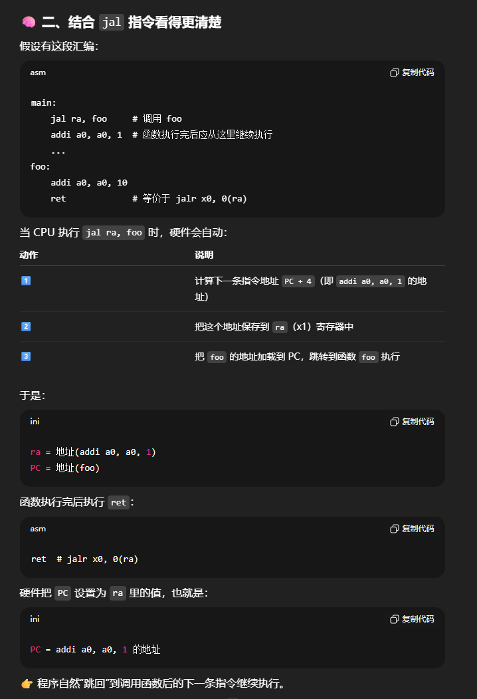
stack
x0是0 x1是返回地址 x2是堆栈指针
sp is the stack pointer 存堆栈的地址


🧩 一、为什么函数调用要用“栈”？
因为在程序执行时，函数可以：
- 嵌套调用（
main → f → g → h） - 有局部变量（每个函数的变量要隔离）
- 有返回地址要保存（
ra不能被覆盖）
于是我们需要一个后进先出（LIFO）的存储结构， 既能保存这些信息，又能在函数返回时自动恢复。
这个结构就是 调用栈（call stack）。
🧠 二、栈的管理寄存器：sp（Stack Pointer）
在 RISC-V 中，x2 寄存器被规定为 sp (stack pointer)，即“栈指针”。
sp始终指向当前栈顶（最低地址）- 栈是向下生长的（即地址减小的方向）
- 每次函数调用时，
sp向下移动分配空间； - 返回时，
sp向上恢复原状。
🧱 三、函数调用时栈上保存什么？
通常保存三类信息：
| 内容 | 说明 | 由谁负责 |
|---|---|---|
返回地址（ra） |
回到上一个函数的指令位置 | 被调用者保存 |
| 调用者保存的寄存器 | 防止被覆盖（如 t0-t6） |
调用者保存 |
| 被调用者保存的寄存器 | 在函数返回前必须恢复（如 s0-s11） |
被调用者保存 |
| 局部变量空间 | 函数内部使用 | 被调用者分配 |
RISC-V 中的寄存器分类
| 寄存器 | 别名 | 说明 | 保存约定 |
|---|---|---|---|
| x0 | zero | 恒为 0 | 不可修改 |
| x1 | ra | return address（返回地址） | 调用者保存 |
| x2 | sp | stack pointer（栈指针） | 全局唯一 |
| x3 | gp | global pointer | 程序初始化时设定 |
| x4 | tp | thread pointer | 线程局部 |
| x5–x7 | t0–t2 | 临时寄存器 | 调用者保存 |
| x8 | s0/fp | 保存寄存器 0 / frame pointer | 被调用者保存 |
| x9 | s1 | 保存寄存器 1 | 被调用者保存 |
| x10–x17 | a0–a7 | 参数/返回值寄存器 | 调用者保存 |
| x18–x27 | s2–s11 | 保存寄存器 2–11 | 被调用者保存 |
| x28–x31 | t3–t6 | 临时寄存器 | 调用者保存 |
非常好的问题 👏，这是理解 RISC-V 函数调用机制（calling convention） 的核心！ 我们来完整讲清楚：函数调用时到底涉及哪些寄存器、它们的作用、由谁保存。
在 RISC-V 架构中，函数调用大致分为三个阶段：
- 调用前（caller）：准备参数、保存现场
- 调用中（callee）：执行函数、保存必要寄存器
- 返回时：恢复现场、返回调用点
整个过程会涉及以下几类寄存器👇
| 类别 | 名称 | 作用 | 保存责任 |
|---|---|---|---|
| 📦 栈与返回 | sp, ra |
栈指针 & 返回地址 | sp 全局唯一，ra 通常由被调用者保存 |
| 🗣 参数/返回值 | a0–a7 |
前 8 个参数 & 返回值 | 调用者保存 |
| 🧮 临时寄存器 | t0–t6 |
临时计算 | 调用者保存 |
| 💾 被调用者保存寄存器 | s0–s11 |
保持跨函数的数据 | 被调用者保存 |
| 📍 特殊指针 | gp, tp |
全局/线程指针 | 初始化后不动 |
| ⚙️ 零寄存器 | zero (x0) |
恒为 0 | 不可修改 |
🧩 三、寄存器用途解析
1️⃣ 参数传递（a0–a7）
- 调用者用
a0–a7放前 8 个参数。 - 返回值也放在
a0（第二个返回值在a1）。
👉 超过 8 个参数的情况： 剩余的参数会存到 栈（stack） 里，由被调用者从栈中取。
2️⃣ 返回地址（ra）
jal指令会把下一条指令的地址存入ra。- 返回时执行
jr ra或ret（其实就是jalr x0, 0(ra)）。
jal ra, func # 调用函数，ra = 下一条指令地址
...
func:
ret # 跳回 ra
3️⃣ 栈指针（sp）
- 每个函数都会分配自己的栈帧。
- 栈帧保存局部变量、寄存器备份等。
func:
addi sp, sp, -16 # 分配16字节栈空间
sw ra, 12(sp) # 保存返回地址
sw s0, 8(sp) # 保存 s0
...
lw ra, 12(sp) # 恢复 ra
lw s0, 8(sp) # 恢复 s0
addi sp, sp, 16
ret
4️⃣ 被调用者保存寄存器（s0–s11）
- 调用者希望这些寄存器在函数调用后值不变。
- 所以如果函数里要用它们，就要先保存到栈上，再恢复回来。
5️⃣ 调用者保存寄存器（t0–t6, a0–a7, ra）
- 如果调用者在调用前还需要这些寄存器的值， 它自己负责把值存到栈上。
main:
addi t0, zero, 10
sw t0, 0(sp) # 调用前保存
jal func
lw t0, 0(sp) # 调用后恢复
✅ 总结一句话
一个函数调用通常会涉及：
- a0–a7（参数/返回值）
- ra（返回地址）
- sp（栈指针）
- s0–s11（被调用者保存）
- t0–t6（临时寄存器）
📘 调用者保存临时状态，
📗 被调用者保证稳定状态，
📙 栈（sp）是它们的缓冲区。
 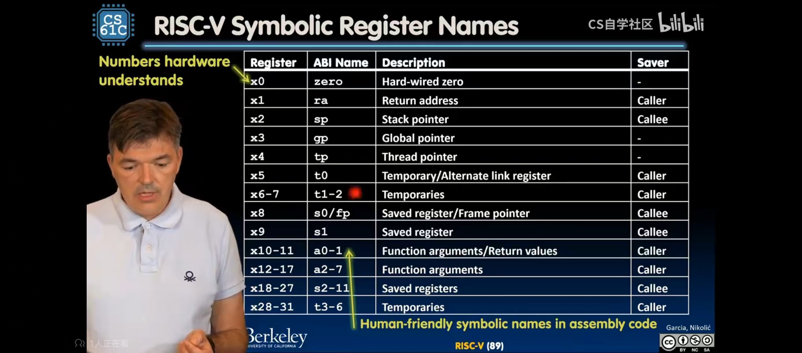
寄存器的两大类型
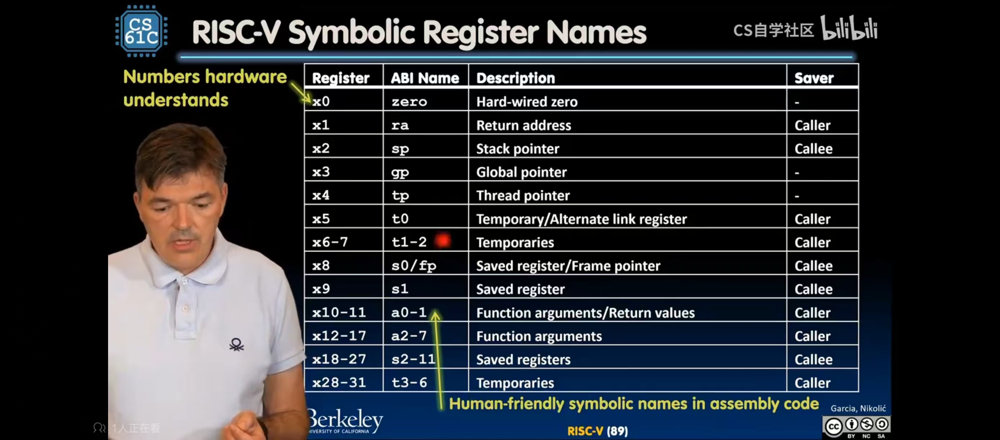
寄存器的两大类型
| 寄存器类型 | 名称范围 | 保存者 | 特点 |
|---|---|---|---|
| Caller-saved（调用者保存） | t0–t6, a0–a7, ra |
调用者 | 用完就扔，不需要恢复 |
| Callee-saved（被调用者保存） | s0–s11 |
被调用者 | 调用结束前必须恢复原值 |
两种寄存器保存模型的对比
| 类型 | 谁负责保存 | 保存频率 | 使用场景 |
|---|---|---|---|
| t0–t6（caller-saved） | 调用者 | 只有在值有用时才保存 | 临时计算结果 |
| s0–s11（callee-saved） | 被调用者 | 每个函数都必须保存/恢复（如果用了） | 长期局部变量 |
函数调用的序言和结尾：
int Leaf
(int g, int h, int i, int j)
{
int f;
f = (g + h) - (i + j);
return f;
}
Leaf:
addi sp sp -8 #序言
sw s1, 4(sp)
sw s0, 0(sp)
add s0,a0,a1
add s1,a2,a3
sub a0,s0,s1
lw s0,0(sp) #结尾
lw s1，4(sp)
addi sp.sp,8
jr ra
ABI（Application Binary Interface，应用二进制接口）
规定哪些寄存器传参数；
哪些寄存器要被保存；
栈帧怎么组织；
返回值放哪；
调用顺序和返回顺序等
RISC-V 的 ABI 规定寄存器职责分明： | 类型 | 名称 | 调用约定 | 用途 | | ---------- | ------ | ---------- | -- | | a0–a7 | 调用者保存 | 参数 & 返回值 | | | t0–t6 | 调用者保存 | 临时变量（不用保存） | | | s0–s11 | 被调用者保存 | 长期变量（必须保存） | | | sp, ra | 特殊 | 栈顶、返回地址 | |
gp： Global Pointer（全局指针）
也就是：全局数据区的基地址寄存器。
在程序运行时，全局变量和静态变量（即 .data、.bss 段）存放在内存的一片区域中。
编译器会：
在程序加载时，把一个“全局数据区”的基地址（通常是中间偏移）放进 gp；
以后访问全局变量时，就可以通过 gp + offset 的形式快速定位。
Memory

 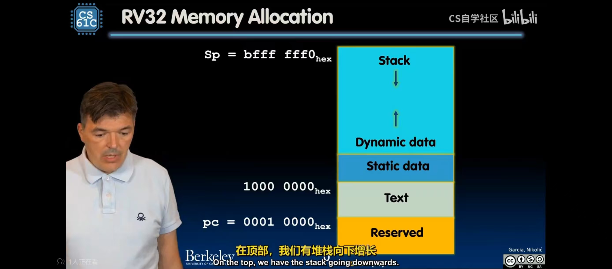
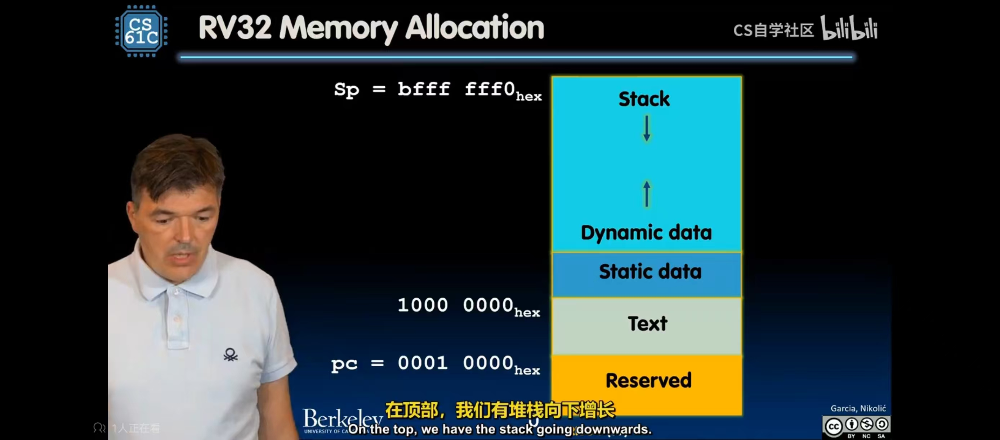

Instructions represent
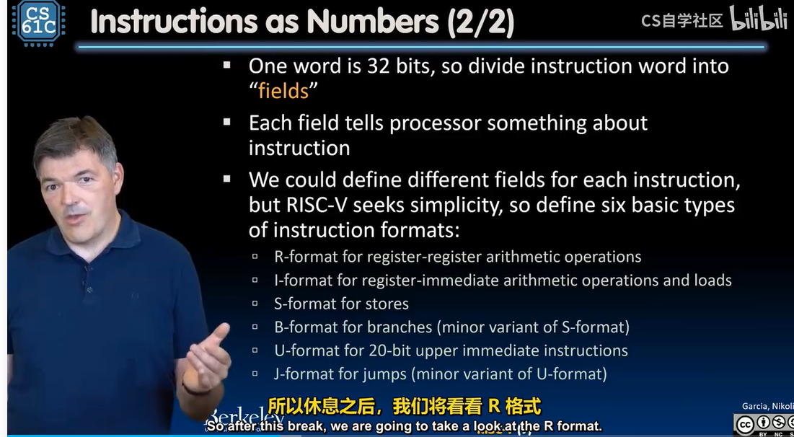
机器语言
R-format(算数与逻辑)
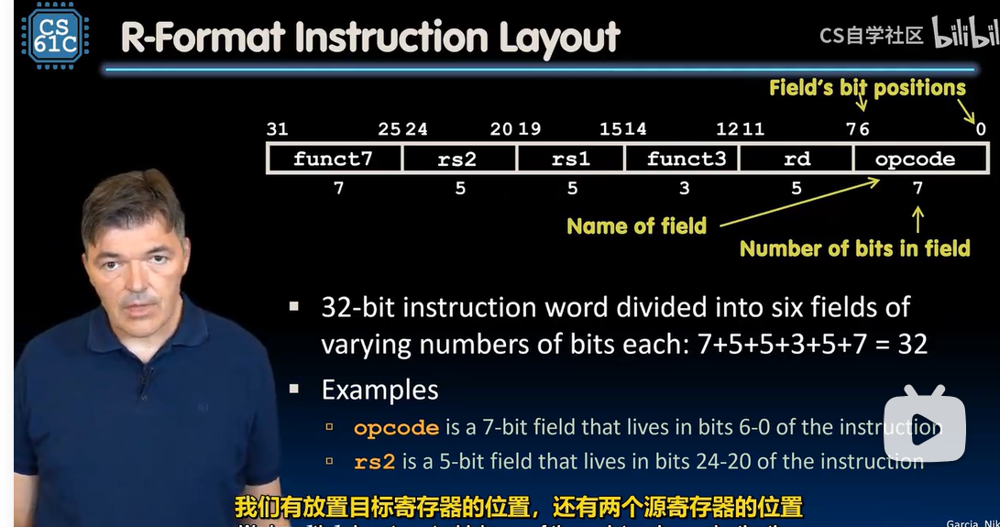
R型操作码都一样 0110011
不同的指令在 funct3和7 （10位）

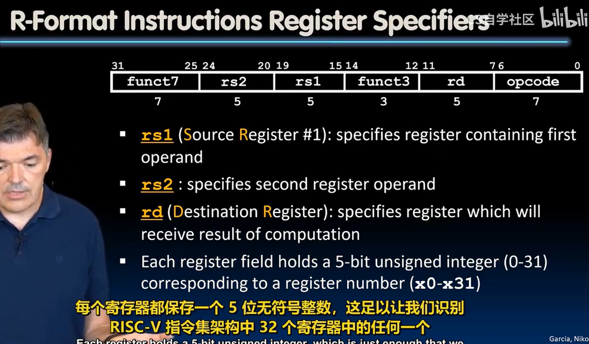
一个例子
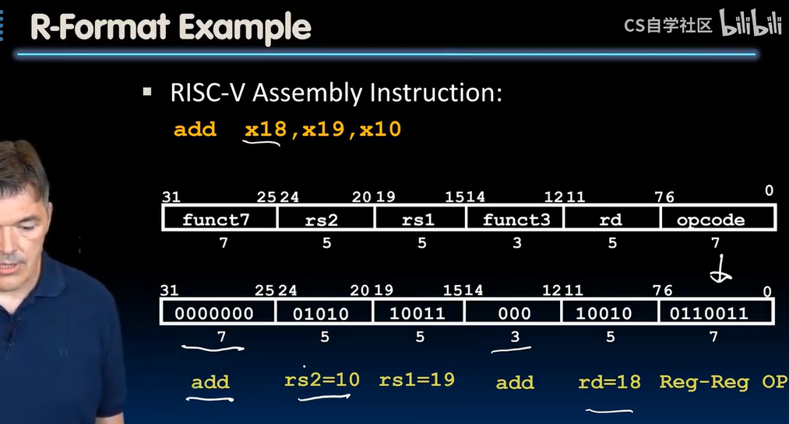
所有R-format 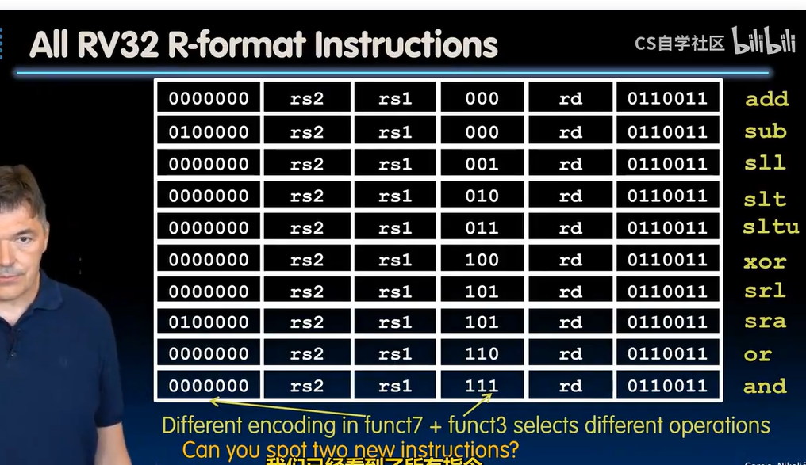
sll 逻辑左移
slt 小于
sltu 小于（无符号版）
sra 逻辑右移
0100000 这里1是符号扩展
I-format（立即数imm）
add rd,rs1,rs2
add rd,rs1,imm
 12位立即数
12位立即数
-2048到+2047
因为rs1的值是32位 所以立即数要符号位扩展到32位
 没有subi 用addi
没有subi 用addi
funct3一致
左右移 移位量是5位
Load
和imm差不多 funct2是加载的类型
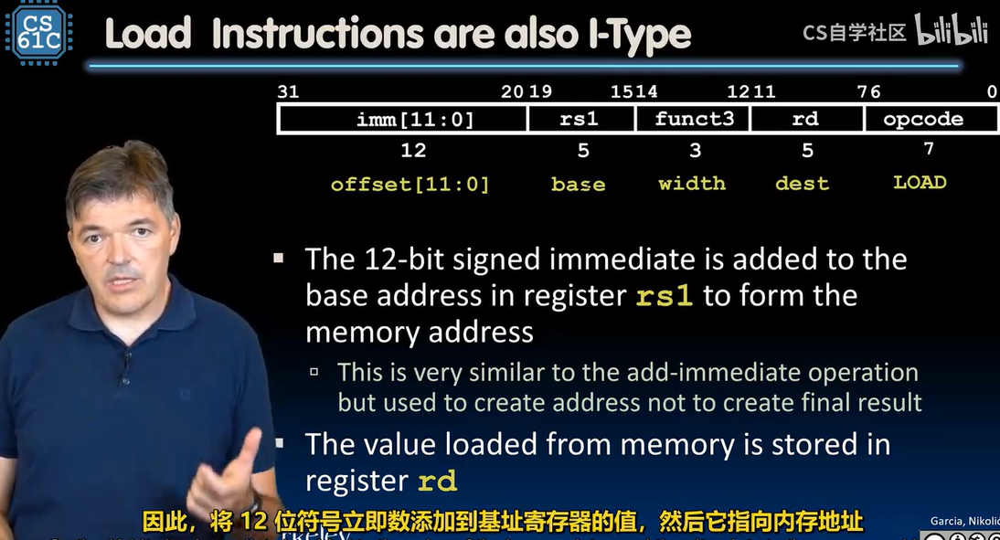 例子： 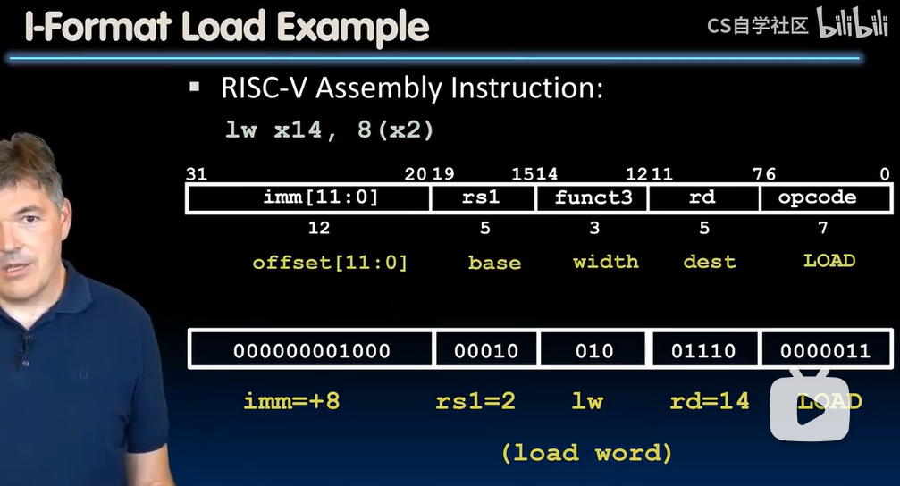
 lb lh都放在目标寄存器的地位 然后进行符号扩展
lb lh都放在目标寄存器的地位 然后进行符号扩展
lbu和lhu不进行符号扩展
lw不需要符号扩展 他就是32位
从寄存器 rs1 中取出一个基址，加上立即数 imm 形成内存地址， 从该地址读取数据，然后写入寄存器 rd
S-format
存储指令
 例子：
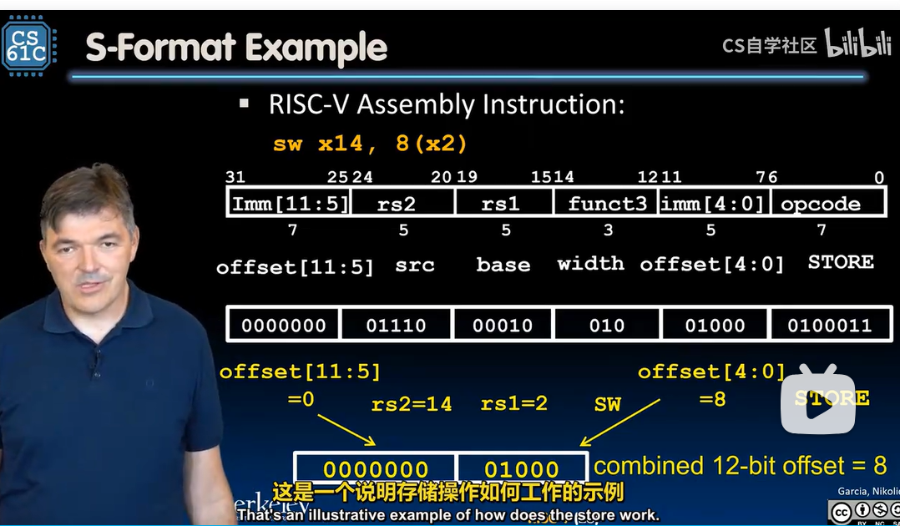
寄存器指令位置不动 把立即数拆了
例子：
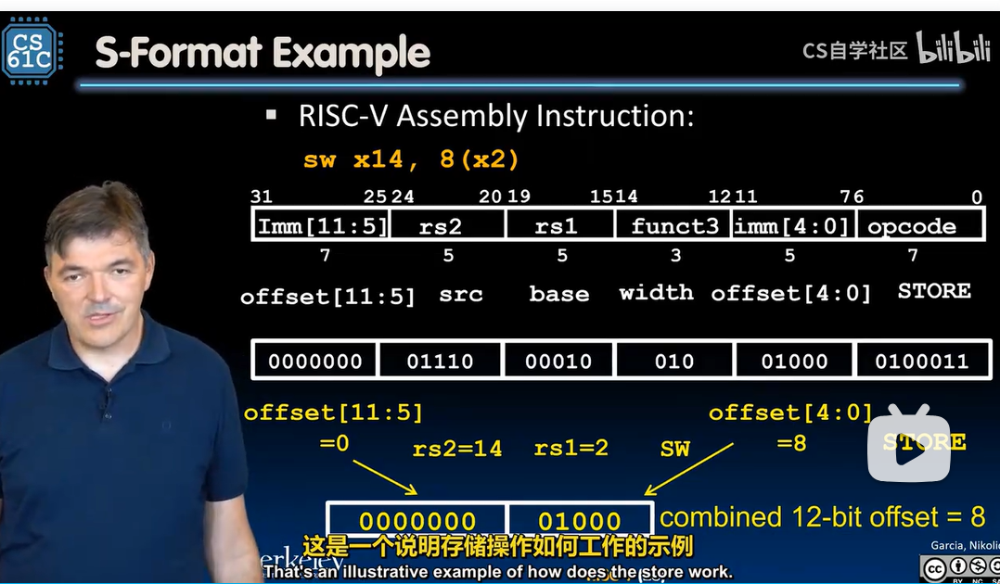
寄存器指令位置不动 把立即数拆了
处理器要很快找到寄存器位置
字节（byte） 8位（bit）
半字（half word）16位（bit）
字（word）32位（bit）

B-format
分支
代码在内存里 不与数据混用
用PC控制
压缩指令格式：16位
16位和32位混用，因此risc-v决定按照16位偏移（2个字节）
但是我们现在只学32位的指令
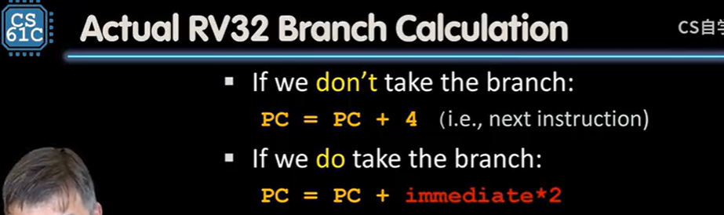
与S类似

跳转以字节为单位 offset就是立即数imm
所以立即数应该是偶数
imm[0] 即最低有效位一定是0 储存12位来表示13位的偏移量
例子：
 offset直接算就好 offset=0就是自身
offset直接算就好 offset=0就是自身

总是扩展inst[31] 即imm的最高位（符号位）


长立即数

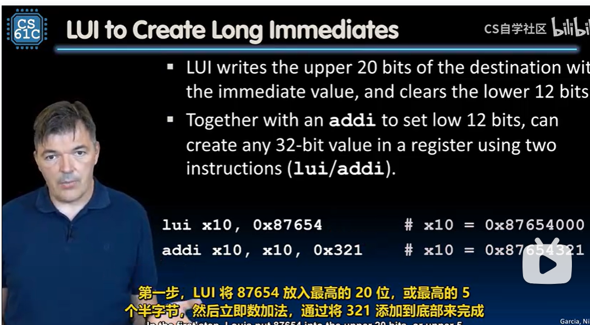
Lui
但是addi会符号扩展


伪指令 li x10， imm
AUIPC

J-format
跳转 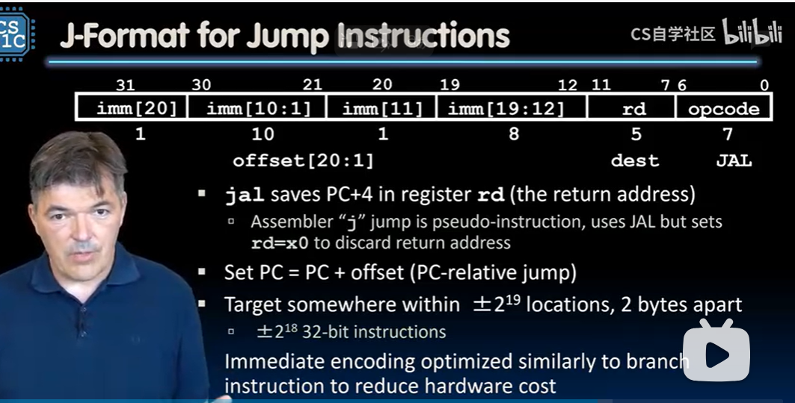
还是偶数 和分支一样
20位来覆盖21位


最低有效位不一定是0 （扩展符号位）可以跳转到绝对位置
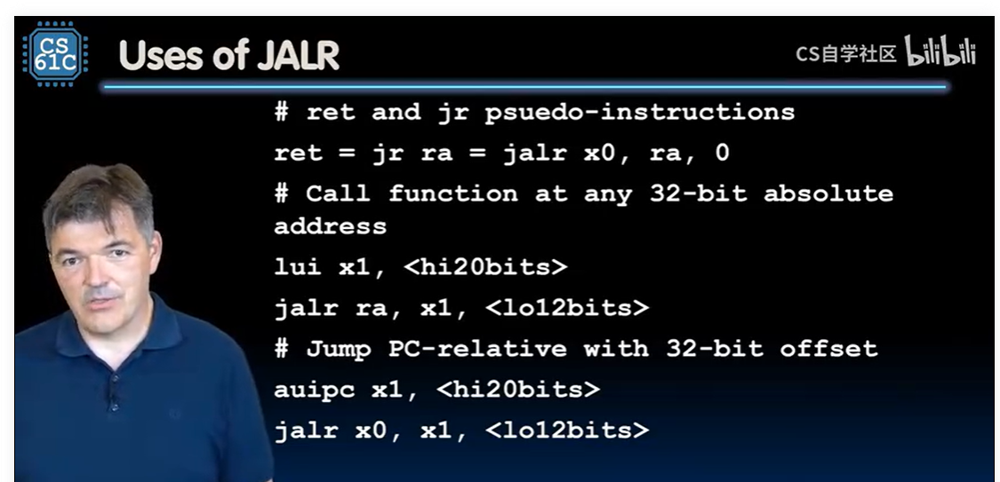
解释和翻译/编译
Interpretation
逐句读取源代码 → 逐句分析 → 逐句执行
解释器（interpreter）不会把整个程序一次性翻译成机器码，而是边读边执行。(动态执行)
也会解释机器码
因为不同isa适配
解释器本身不依赖目标机器 CPU 的指令集，而是依赖它自己定义的一套“虚拟指令集
python代码 -> 词法分析 把字符序列分成单词（token）
-> 语法分析 构建语法树（AST）
-> 生成中间字节码 解释器不会直接生成机器码，而是生成虚拟机字节码
解释器本身（比如 CPython 的 python 可执行文件）是用 C 写的，它在发布/安装时已经被编译、汇编、链接成机器码。这一步只做一次（在你运行解释器之前或安装时）。
-> 虚拟指令（bytecode） 不是单独被编译成机器码再运行的；它们被解释器读入，解释器用已编译好的机器码“执行”这些虚拟指令的语义。
transformation
Venus！

加载器：把程序加载到内存中 并设置他需要的东西 然后运行
编译器
.c -> .s c语言转汇编
 伪指令可行（由汇编器优化）
伪指令可行（由汇编器优化）
汇编器


是的，基本上你看到的这些指令都是 编译器生成的汇编代码里的，尤其是像 GCC 这种生成的 GNU 汇编（GAS）语法 的汇编文件。
我帮你梳理一下它们在 C/C++ 编译过程中的位置和作用：
1️⃣ 编译流程回顾
-
源代码 (
.c/.cpp) → 预处理 → 编译 → 汇编 → 目标文件 (.o) → 链接 → 可执行文件 -
在 编译生成的汇编文件（用
gcc -S foo.c可以看到.s文件）里，常见的指令有： -
.text：放编译出来的 函数机器码 .data：放 已初始化的全局/静态变量.bss：放 未初始化的全局/静态变量.global：标记函数或变量 可被其他目标文件访问.string/.asciz：放 字符串字面量.word/.long：放 整数常量或初始化值
2️⃣ 举例
假设你有一个简单的 C 代码：
#include <stdio.h>
int g = 42; // 已初始化全局变量
int h; // 未初始化全局变量
int main() {
const char* s = "Hello";
return 0;
}
用 GCC 生成汇编 (gcc -S main.c) 可能得到类似：
.data
g: .long 42 # g 存放在 .data 段
.bss
h: .skip 4 # h 存放在 .bss 段
.text
.global main
main:
push %rbp
mov %rsp, %rbp
lea .LC0(%rip), %rdi # 字符串地址
mov %eax, 0
pop %rbp
ret
.section .rodata
.LC0:
.string "Hello" # 字符串常量
可以看到：
.data：初始化变量g.bss：未初始化变量h.text：函数main的代码.global main：使main全局可见.string：字符串字面量"Hello"
所以总结：
你看到的
.text、.data、.bss、.global、.string、.word，都是编译器把 C/C++ 代码翻译成汇编后生成的符号或指令，最终会被汇编器翻译成机器码存入可执行文件里。
-1 在补码里全是1

la（load address）其实就是把一个标签的绝对地址加载到寄存器
符号表 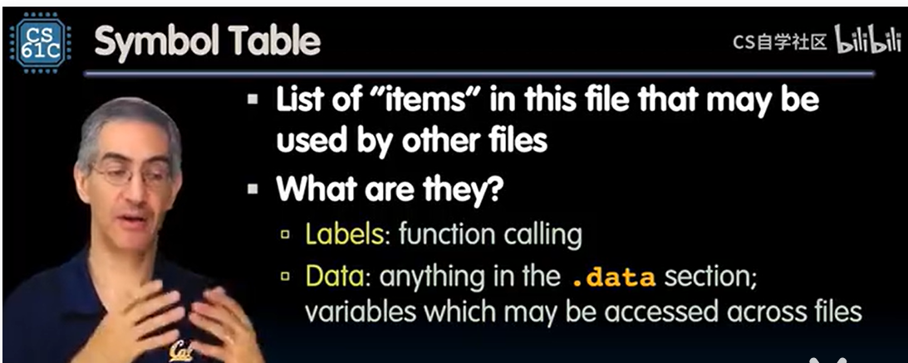
重定位表： 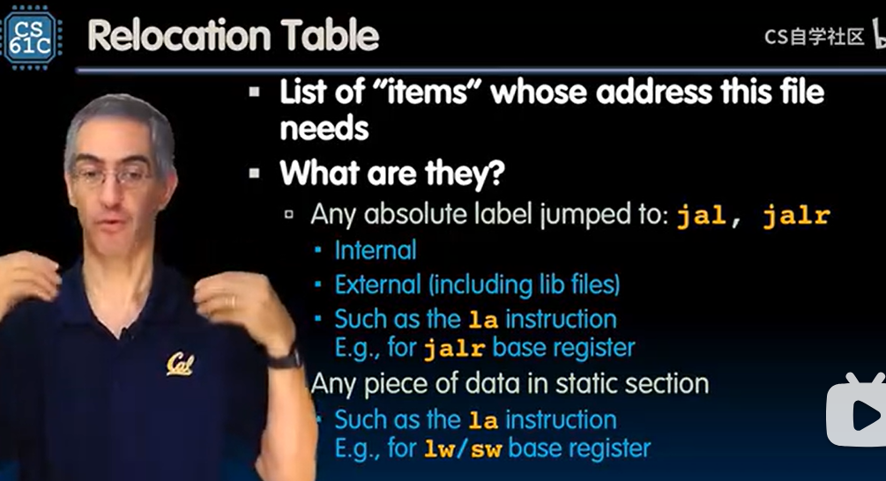
非常棒的问题👏，这其实是汇编器和链接器的核心机制—— 搞懂“符号表（Symbol Table）”和“重定位表（Relocation Table）”，你就真正理解汇编器和链接器是怎么协作生成可执行程序的了。
🧩 一、符号表（Symbol Table）
📖 定义
符号表是汇编器在汇编时维护的一张“符号—地址映射表”。
它记录程序中所有可被引用的符号（symbol），包括：
- 全局变量
- 局部标签（函数、局部跳转标签）
- 外部引用（例如
printf） - 常量、字符串、段等位置符号
📘 符号表的内容（每个符号的条目）
| 字段 | 含义 | 示例 |
|---|---|---|
| Name | 符号名 | main, msg, printf |
| Section | 符号所在段 | .text, .data, .bss, UNDEF |
| Value | 符号在该段内的偏移 | 0x00000010 |
| Size | 符号长度（函数或变量大小） | 4, 32... |
| Binding | 符号的可见性 | LOCAL, GLOBAL, EXTERN |
| Type | 符号类型 | FUNC, OBJECT, NOTYPE |
📗 示例：符号表（简化）
假设源代码如下：
.data
msg: .asciz "Hi"
.text
.globl main
main:
la a0, msg
li a7, 4
ecall
汇编后（未链接）符号表可能长这样：
| Name | Section | Value | Binding | Type |
|---|---|---|---|---|
| msg | .data | 0x0000 | LOCAL | OBJECT |
| main | .text | 0x0000 | GLOBAL | FUNC |
| a7 | — | — | REGISTER | — |
| ecall | — | — | INSTR | — |
⚙️ 二、重定位表（Relocation Table）
📖 定义
当一条指令中引用了一个未知地址的符号（例如全局变量、函数、字符串标签等）， 汇编器暂时无法确定它的绝对地址，就必须在输出文件里留个“坑”，告诉链接器：
“这里有个还没填的地址，请链接时帮我补上！”
这张“需要补坑”的记录表，就是重定位表（Relocation Table）。
📘 每个重定位项包含的内容
| 字段 | 含义 | 示例 |
|---|---|---|
| Offset | 哪个位置需要修改 | .text 段内的偏移 |
| Symbol | 关联的符号 | 比如 msg |
| Type | 重定位类型 | R_RISCV_HI20 / R_RISCV_LO12_I |
| Addend | 附加值（常数偏移） | 一般为0 |
📗 举例：la a0, msg
这条伪指令其实会展开为两条指令：
lui a0, %hi(msg)
addi a0, a0, %lo(msg)
汇编器此时并不知道 msg 在内存中的真实地址，只知道它属于 .data 段。
于是汇编器会生成两个重定位项：
| 段 | 偏移 | 符号 | 类型 | 描述 |
|---|---|---|---|---|
| .text | 0x0004 | msg | R_RISCV_HI20 | 需要把 %hi(msg) 填进去 |
| .text | 0x0008 | msg | R_RISCV_LO12_I | 需要把 %lo(msg) 填进去 |
当链接器把 .text 段和 .data 段拼在一起时，它会：
- 计算出
msg的实际地址（比如0x10010000） - 把
0x10010000的高 20 位填入lui - 把低 12 位填入
addi
这样程序里的 la a0, msg 最终就变成了有效的加载地址指令。
🧱 三、符号表与重定位表的关系
这两张表是“配对使用”的：
| 符号表 | 重定位表 |
|---|---|
| 定义了每个符号的逻辑位置 | 指出程序里哪些地方用到了符号 |
| 相当于字典 | 相当于“引用索引” |
| 由汇编器生成，链接器使用 | 由汇编器生成，链接器修改 |
链接器链接时：
- 查找重定位表 → 找出需要修改的地方
- 在符号表中查到该符号的真实地址
- 计算偏移 → 回写机器码
🧠 四、直观理解
可以这样想象：
| 角色 | 比喻 |
|---|---|
| 符号表 | 名片本：记录“谁是谁”、“住哪” |
| 重定位表 | TODO 清单：哪些地方要等“地址确定”后再改 |
汇编器：
“我先把名字都记下（符号表），遇到暂时没地址的地方打个标记（重定位表）。”
链接器：
“我来帮你补全这些标记，让每条指令都指向正确的地址。”
🧩 五、总结对比表
| 项目 | 符号表 | 重定位表 |
|---|---|---|
| 作用 | 保存符号及其定义位置 | 保存需要修正的引用位置 |
| 内容 | 名称、段、地址、类型 | 段偏移、符号引用、类型 |
| 谁生成 | 汇编器 | 汇编器 |
| 谁使用 | 链接器 | 链接器 |
| 示例 | msg → .data+0x00 |
.text+0x08 引用了 msg |
🧩 一、汇编器的总体目标
汇编器的任务是：
把汇编源文件
.s翻译成目标文件.o，.o文件中不直接包含最终地址，而是包含：
- 翻译好的机器指令（.text/.data 段）
- 符号表（记录每个名字是什么）
- 重定位表（记录哪里需要等链接器来补地址）
⚙️ 二、汇编器的三大核心工作
🧱 1. 翻译：把汇编指令变成机器码模板
汇编器扫描 .s 文件，逐行翻译：
addi t0, t1, 4
➡️ 转换为机器码：
000000000100 01001 000 01000 0010011
伪指令也会展开：
la a0, msg
➡️ 实际生成：
lui a0, %hi(msg)
addi a0, a0, %lo(msg)
到这里，汇编器已经能生成机器指令的结构，但有的指令还不能填上立即数（因为符号的地址还没确定）。
📇 2. 建符号表（Symbol Table）
汇编器在翻译过程中，记录所有“带名字的东西”的位置：
| 符号名 | 所在段 | 段内偏移 | 绑定类型 | 类型 |
|---|---|---|---|---|
| msg | .data | 0x0000 | LOCAL | OBJECT |
| main | .text | 0x0000 | GLOBAL | FUNC |
| printf | UNDEF | 0x0000 | EXTERN | FUNC |
这张表告诉链接器：
“msg 在数据段的偏移 0x0；main 是全局函数；printf 我没定义，等你帮我找。”
🧩 3. 建重定位表（Relocation Table）
当汇编器发现一条指令里引用了未知地址的符号，比如：
lui a0, %hi(msg)
addi a0, a0, %lo(msg)
它知道 msg 的地址还没确定（因为 .data 段在别的文件可能有其他变量），
于是生成两条重定位记录：
| 段 | 偏移 | 符号 | 类型 | 说明 |
|---|---|---|---|---|
| .text | 0x0004 | msg | R_RISCV_HI20 | 高 20 位 |
| .text | 0x0008 | msg | R_RISCV_LO12_I | 低 12 位 |
告诉链接器：
“当你知道 msg 的真实地址后，请到
.text段偏移 0x4 和 0x8 处把立即数补上。”
🧠 三、所以汇编器到底干了啥（一句话总结）
汇编器把汇编语言转成机器码雏形，并建立地址关系表。
更具体地说：
| 步骤 | 汇编器做的事情 | 输出 |
|---|---|---|
| 1️⃣ 解析源代码 | 分析每条汇编指令和伪指令 | 中间结构 |
| 2️⃣ 确定段布局 | .text、.data、.bss 各自起始地址和大小 |
段表 |
| 3️⃣ 建符号表 | 记录每个标签、函数、变量名及其段和偏移 | .symtab |
| 4️⃣ 翻译成机器码 | 生成指令的二进制形式 | .text 段 |
| 5️⃣ 生成重定位项 | 对未确定地址的符号生成“待填坑信息” | .rel.text、.rel.data |
| 6️⃣ 输出目标文件 | 把以上内容打包为 .o |
ELF 目标文件 |
🧭 四、形象比喻
可以把整个过程想象成装修房子：
| 角色 | 比喻 |
|---|---|
| 汇编器 | 木匠：先搭好框架（机器码），但一些家具位置（地址）还没定 |
| 符号表 | 户型图：标明每个房间和物品的名字与位置 |
| 重定位表 | 待装修清单：记录“等材料到了再装这里” |
| 链接器 | 总包工：收齐所有 .o 文件，算出最终地址，把坑补上 |
🧾 五、最终汇编器的输出文件内容（ELF结构示意）
hello.o
├── .text # 翻译后的机器码
├── .data # 静态数据
├── .bss # 未初始化变量
├── .symtab # 符号表
├── .rel.text # 重定位信息（指令引用的符号）
├── .rel.data # 重定位信息（数据引用的符号）
└── 头部信息 # ELF 文件头等元数据
✅ 六、总结一句话记忆
汇编器 = 翻译器 + 制表员 + 留坑工。
- 翻译器：把汇编指令翻成机器码
- 制表员：建立符号表，告诉谁在哪
- 留坑工：遇到未知地址就打标记，等链接器补

硬编码是写死的东西
链接器
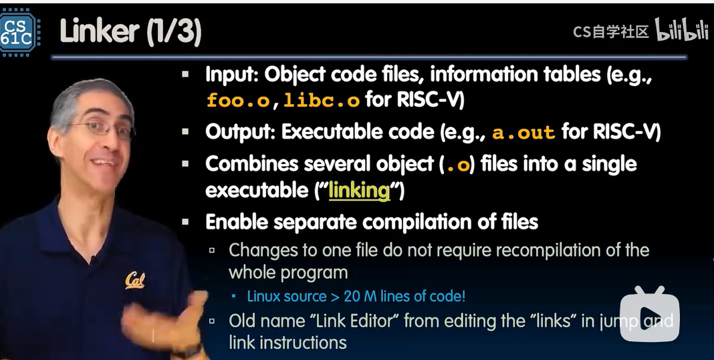


编译后的汇编中：
局部变量 不直接存在于任何段中，而是由 .text（代码段）的指令在运行时通过栈操作动态分配。
静态变量 / 全局变量 会被放进 .data（或 .bss）段中，等待链接器统一安排它们在“静态区”的最终地址。
内存通常被划分成几块（以 C 程序为例）：
| 区域 | 内容 | 分配时间 |
|---|---|---|
| 代码区 (.text) | 函数机器码 | 编译 + 链接确定 |
| 静态/全局区 (.data/.bss) | 全局变量、静态变量 | 链接时确定地址，程序运行期间一直存在 |
| 栈区 (stack) | 局部变量、函数调用帧 | 运行时分配/释放 |
| 堆区 (heap) | 动态分配（malloc/new） | 运行时 |


运行成本高一点

在机器代码级别链接
加载器（OS）

162课程 可执行文件在磁盘里
干动态链接的活


例子
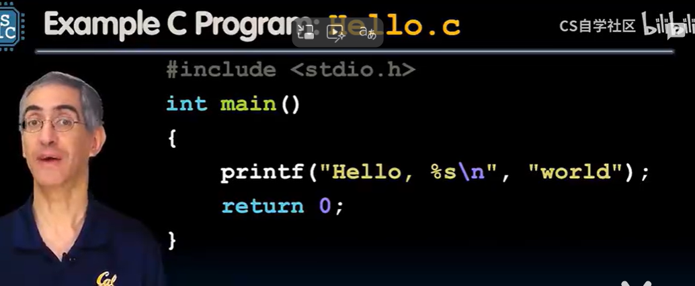 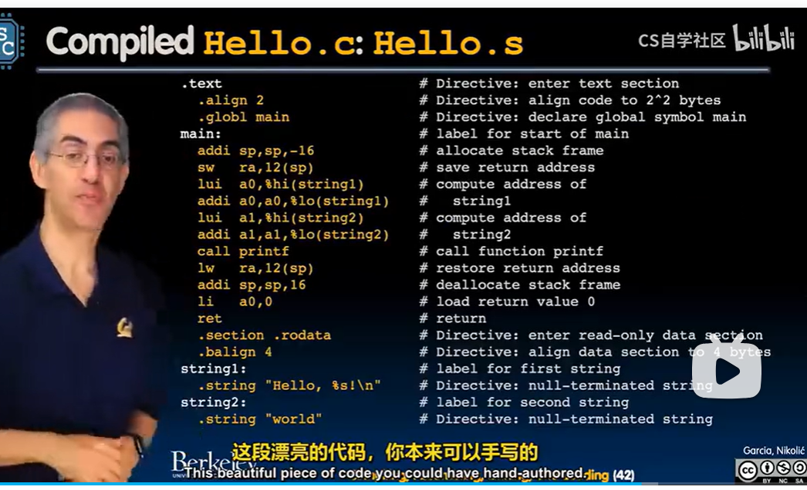

红色是链接器的任务
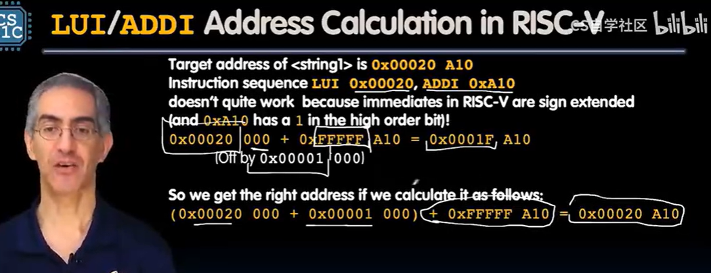 注意补偿
把补码取反+1得到绝对值
单核处理器
 可以每个指令每个数据路径 但是现在是单个数据路径 由control来控制实现什么
可以每个指令每个数据路径 但是现在是单个数据路径 由control来控制实现什么
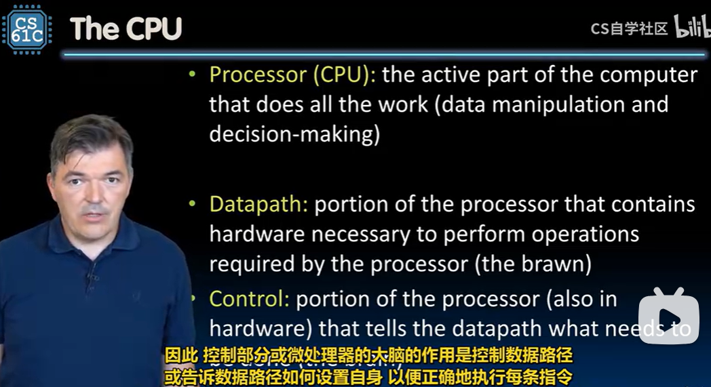
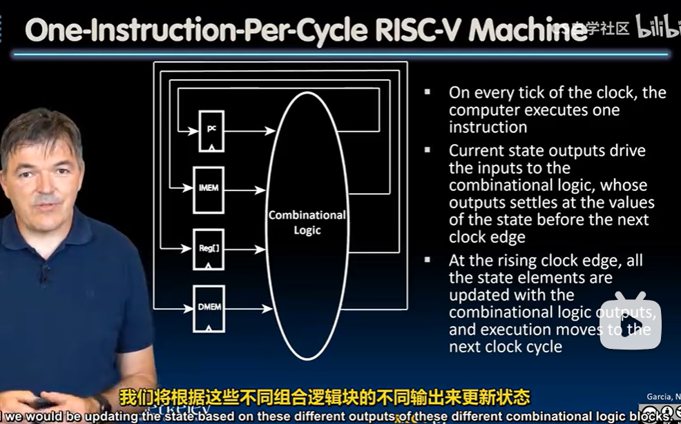
分而治之实现指令

IMEM 指令内存
DMEM 数据内存
在物理层面的一块内存上 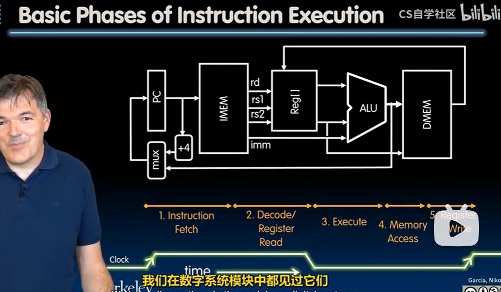
都在单周期实现
寄存器

寄存器在使能时在时钟的上升沿写入 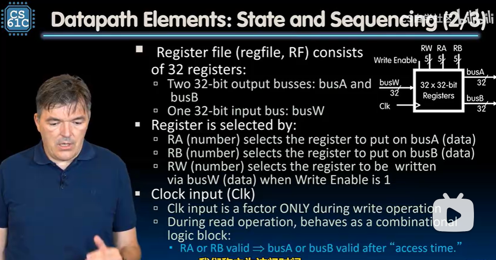 读取不需要时钟 但是会需要一些访问时间
可以同时读两个
内存
 也有读写访问时间
也有读写访问时间
rs1 rs2 rd
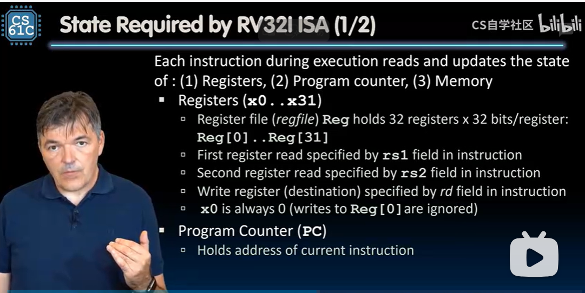

开始实现不同通路：
IMEM不需要时钟
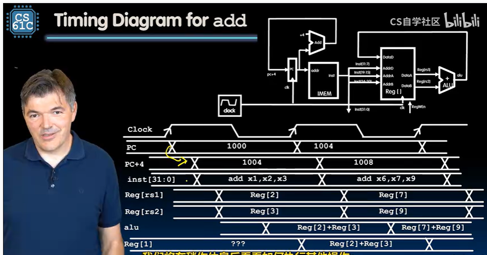
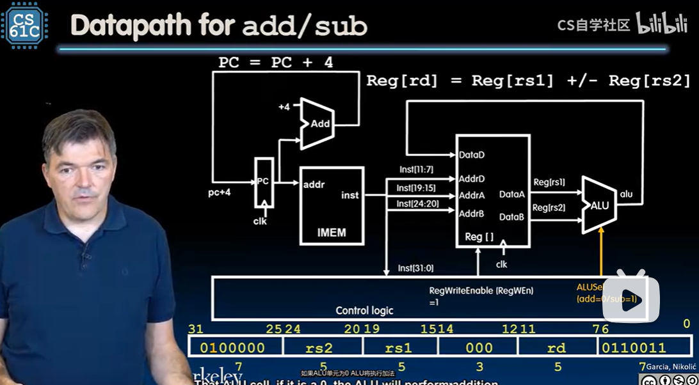
有符号扩展：高位全接 imm 最高位
寄存器总是读取 只有写入才按照时钟
risc-v是加载储存架构：没有其他方式可以访问内存
jarl
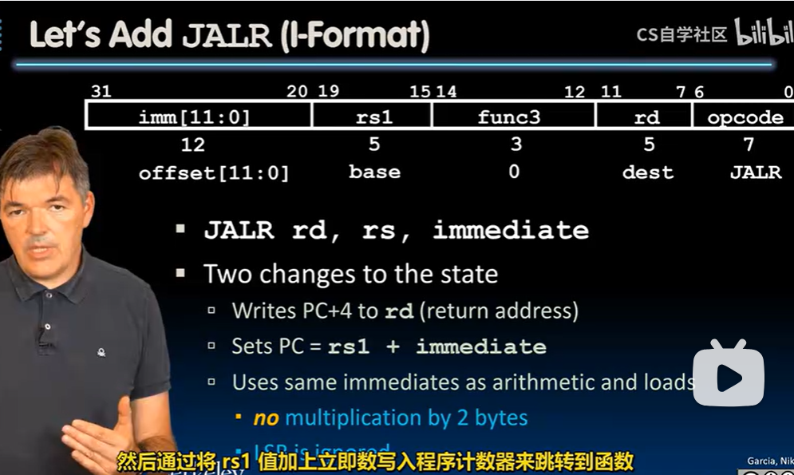

性能测试


 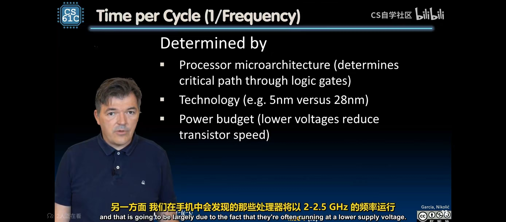
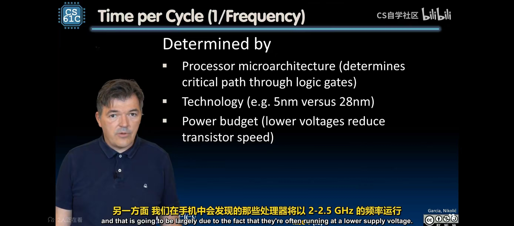
流水线
理论加速4倍，4个阶段（长度为l，任务量为x 原长度为x，后4l=x）
但是流水线的填充和清除需要时间


算了一下还真是，减少不了太多时间
🧩 一、什么是吞吐量（Throughput）
吞吐量 = 单位时间内系统完成的任务数量。
对于处理器来说，就是每秒能完成多少条指令（instructions per second）。
✅ 举个简单例子
| 情况 | 每条指令耗时 | 吞吐量 |
|---|---|---|
| 不流水线 | 5 ns | 1 / 5 ns = 0.2 指令/ns |
| 流水线（5级） | 每级 1 ns | 理论上每 1 ns 出一条指令 → 1 指令/ns |
👉 所以流水线的作用是 提高吞吐量（Throughput）， 而不是缩短单条指令的延迟（Latency）。
⚙️ 二、流水线是怎么工作的
假设有 5 个阶段（IF, ID, EX, MEM, WB）：
阶段: 取指 → 译码 → 执行 → 访存 → 写回
- 每个阶段负责一部分工作；
- 下一条指令可以在前一条指令的下一个阶段同时执行。
就像工厂流水线一样： 一辆车在喷漆时，下一辆可以焊接骨架。
⏱️ 三、为什么“被最慢阶段限制”
关键在于：
所有阶段必须 同步，每个阶段的时间取决于 最慢阶段。
🔍 举个例子
| 阶段 | 延迟（ns） |
|---|---|
| IF | 1 |
| ID | 1.5 |
| EX | 2 |
| MEM | 1 |
| WB | 1 |
那么：
- 每条指令的一个阶段最慢要花 2 ns（在 EX 阶段）。
- 所以整个流水线的 时钟周期必须 ≥ 2 ns，否则最慢阶段来不及完成。
📈 结果
| 项目 | 含义 | 值 |
|---|---|---|
| 时钟周期 | 被最慢阶段决定 | 2 ns |
| 吞吐量 | 每个周期完成一条指令 | 1 / 2 ns = 0.5 指令/ns |
即使其他阶段更快，也得等 EX 阶段慢慢做完。 所以整个流水线 像一队人被最慢的人拖慢了速度。
🔄 四、延迟 vs 吞吐量
| 概念 | 含义 | 影响 |
|---|---|---|
| 延迟（Latency） | 单个任务完成的时间 | 不变甚至略增 |
| 吞吐量（Throughput） | 单位时间完成的指令数量 | 提高很多 |
流水线的本质：牺牲延迟，换取吞吐量。
| 项目 | 说明 |
|---|---|
| 每条指令延迟（Latency） | 不变甚至略增加（因为有流水线寄存器） |
| 吞吐量（Throughput） | 提高（多条指令同时在不同阶段） |
| 每条指令启动时间（首条输出） | 推迟（要等流水线“填满”） |
| 每个阶段间需要额外寄存器延迟 | 增加硬件延时 |
开始实现
寄存器写入是时序的（需要时钟沿），寄存器读取是组合的（直接读 Q 信号）
流水线 CPU 必须 用“流水线寄存器（Pipeline Registers）”隔离每个阶段。
如果没有“流水线寄存器”，上一阶段的输出会在同一拍被下一条指令覆盖，整个流水线根本跑不起来。
🟥 1. 为什么流水线一定要“流水线寄存器”？
流水线分五阶段（经典 RISC）：
IF → ID → EX → MEM → WB
如果不用流水线寄存器，那么：
- IF 阶段产生的 PC、指令会直接被下一次 IF 更新
- ID 阶段解析指令时，用的指令会在同一个周期被下一条指令覆盖
- EX 阶段的操作数没有保存位置
- MEM 阶段读写结果不稳定
- WB 要写回谁？不知道，因为数据被覆盖完了
最终变成：
所有阶段共享同一份信号，每条指令刚开始执行就被下一条覆盖 → CPU 根本不能流水处理。
也就是说：
流水线如果不加寄存器，整个 CPU 只能每拍执行一条整指令（非流水）。
🟦 2. 流水线寄存器是什么？
流水线寄存器 = 在每两个阶段之间加一个寄存器，用时钟沿锁住数据防止被覆盖
比如：
IF/ID 寄存器
ID/EX 寄存器
EX/MEM 寄存器
MEM/WB 寄存器
示意图：
┌──────┐ ┌──────┐ ┌──────┐
IF → │ IF/ID│ →ID │ID/EX │ →EX │EX/MEM│ →MEM → ...
└──────┘ └──────┘ └──────┘
每个模块之间隔离成独立的节拍。
🟩 3. 用一个例子看覆盖问题（马上懂）
假设你没有流水线寄存器，只有这两个信号：
instr
pc
周期 1：
IF 得到指令 A → instr = A
同周期 ID 解析 instr（= A）
周期 2：
IF 得到指令 B → instr = B（覆盖掉 A）
但此时 ID 还在处理 A！
但是：
instr 已经变成 B 了。
所以 ID 解析到的变成了 错误的 B，A 彻底废掉。
所以没有寄存器就完蛋了。
🟧 4. 有流水线寄存器后，情况变成这样：
在周期末，寄存器 锁住 每阶段的数据：
IF → (IF/ID 寄存器锁住 A)
ID → (ID/EX 寄存器锁住 A)
EX → (EX/MEM 锁住 A)
MEM → …
同时：
下一条指令 B 在 IF 运行 但 不会覆盖 IF/ID 中的 A，因为它们之间加了寄存器。
🟨 5. 流水线寄存器的本质
一句话：
流水线寄存器就是一堵墙，每拍锁住前一阶段的全部输出，让下一阶段安心处理自己的那条指令，不会被下一条覆盖。
流水线寄存器是让 CPU 能“并行执行多条指令”的根本。
🟦 6. 流水线寄存器里会存什么？
以 IF/ID 为例：
PC + 4
当前指令 instruction
可能还有异常/预测信息
ID/EX 可能存：
操作码 opcode
源寄存器读出的值
立即数
ALU 控制信息
目标寄存器号
每一阶段都把下一阶段需要的数据全部锁住。
🟪 7. 用一句你一听就懂的话总结：
没有流水线寄存器 = 只有一个共享“变量” → 下一条指令会覆盖上一条 → 流水线无法存在。
有流水线寄存器 = 每条指令在不同阶段都有自己的“数据快照” → 才能并发执行多个指令。
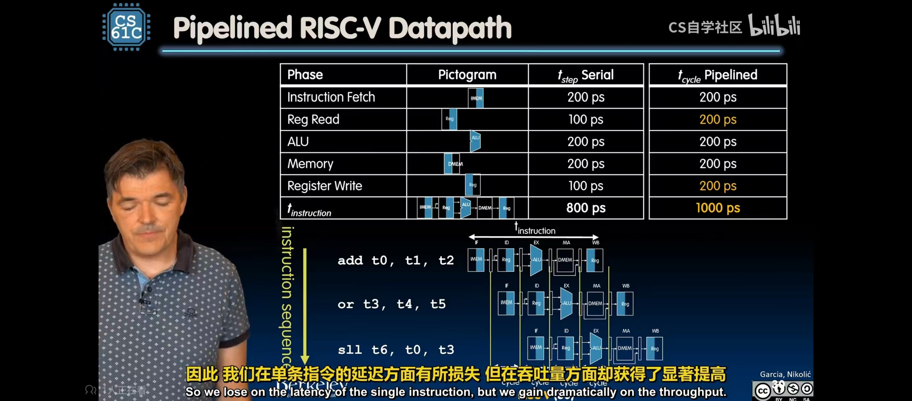
单周期CPU 周期800ps
流水线的是200ps
吞吐量提高，整条指令周期时间变长
理论5倍提速，但是因为每个阶段时间不一样，按照最长200ps，导致损失了一点，也能提高4倍
Datapath
单周期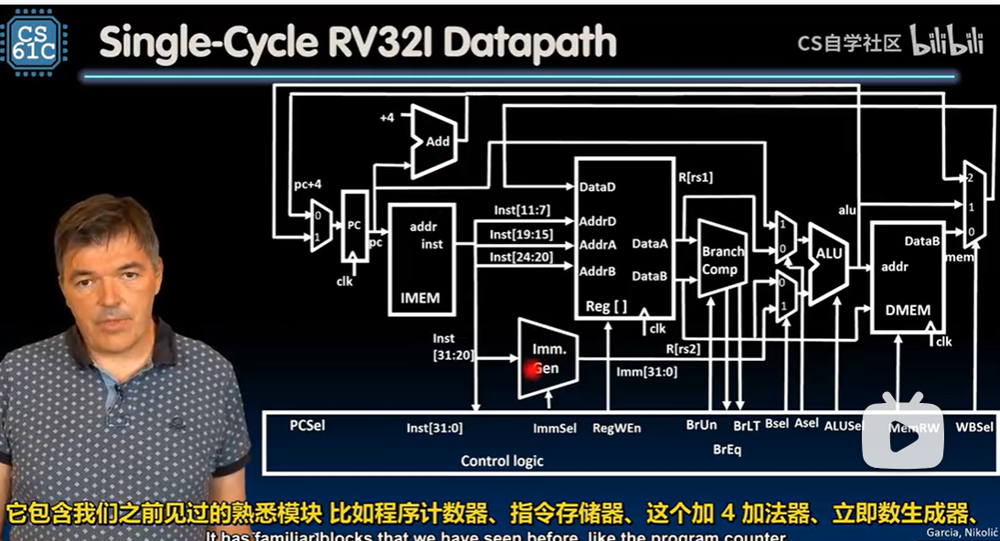
memory read和register access是组合逻辑 不依赖于时钟
五个阶段:

流水线：
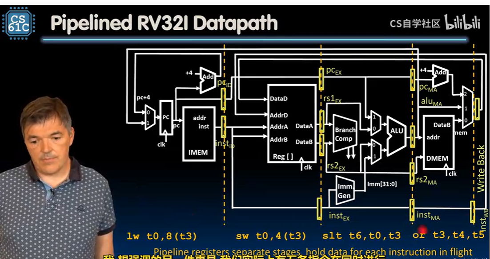
流水线寄存器分割不同阶段
IF/ID ID/EX EX/MA MA/WB
IF/ID ： 一个pc寄存器 一个inst寄存器，而且获取一条指令，下游会保存之前的四条指令（同时有5条指令进行）
举个例子：
取址阶段 第一个时钟上沿pc写入新值并且pc寄存器输出新值，memory输出指令（组合逻辑） 下一个时钟上沿 指令和pc写入流水线寄存器，同时pc寄存器输入新值并输出新值
每个流水线寄存器都必须保存在该阶段执行的指令位
还有控制位 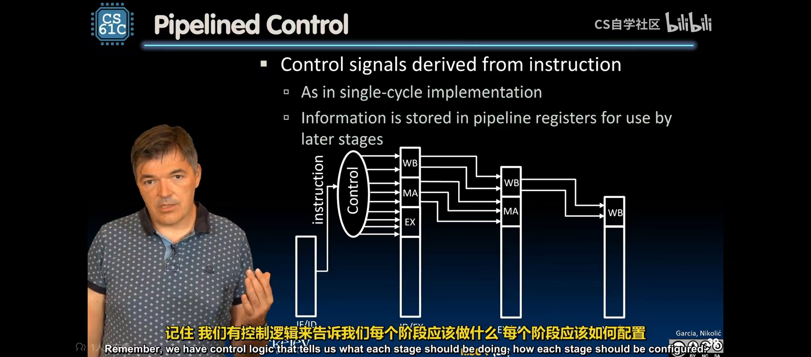(没太懂) 只保存了pc没有保存pc+4 重建了pc+4 省了一堆寄存器
所以前三个阶段是pc，内存访问阶段使用pc+4
流水线冒险（pipelining Hazards）
有些情况下，不同阶段的指令之间会产生数据、控制或结构上的冲突，导致流水线不能顺利执行，这就是所谓的流水线冒险（hazard）。
阻止在有指令正在执行时启动新指令
2️⃣ 冒险的三大类型
(1) 数据冒险（Data Hazard）
- 原因：后一条指令需要使用前一条指令还没计算出的结果。
- 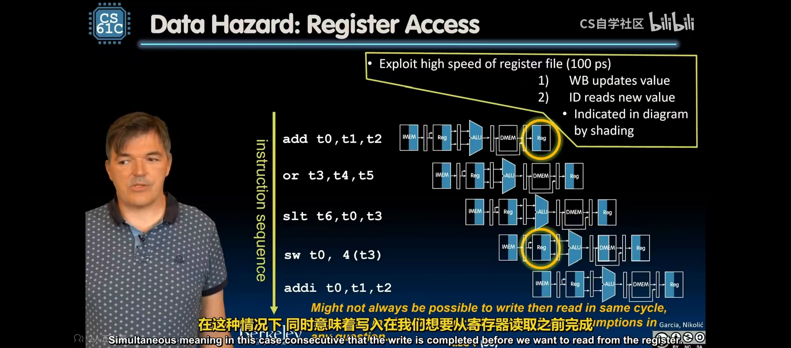 寄存器要支持同时写入和读取（在61c里是先写入在读取）
- 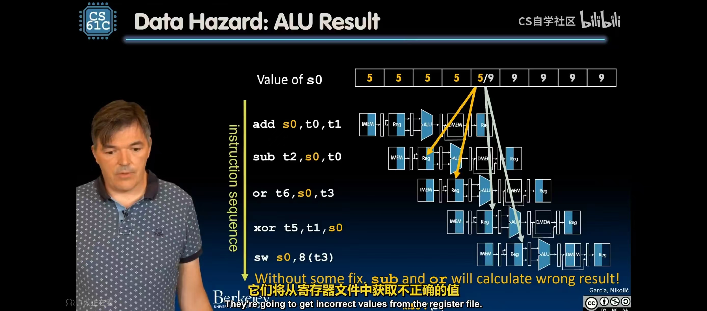
解决方法一： 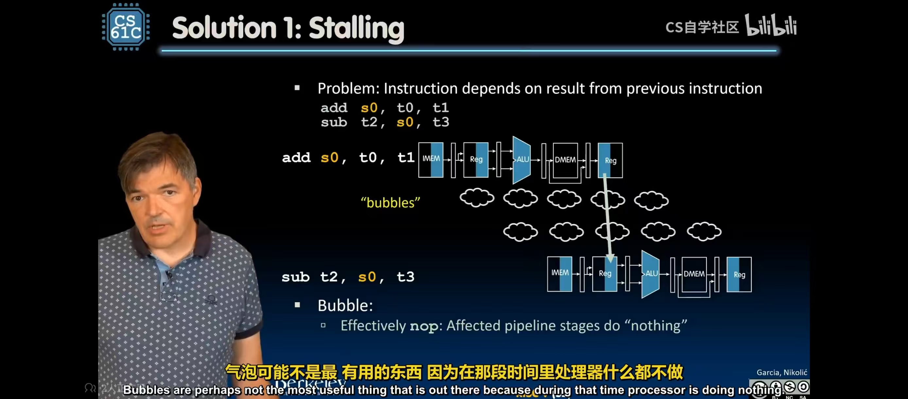 插入NOPS 即写入x0的任何指令（会导致性能损失）
但是编译器会进行一些优化，提前进行不依赖s0的指令
解决方法二：
转发：

 在指令寄存器里比较寄存器 ，判断是否转发
在指令寄存器里比较寄存器 ，判断是否转发
 ALU B也要进行同样的操作
ALU B也要进行同样的操作
具体操作：

(2) 控制冒险（Control Hazard / Branch Hazard）
- 原因：分支指令（如
beq,j）会改变 PC，但流水线可能已经取了下一条指令。 - 示例：
asm
beq $t0, $t1, Label
add $t2, $t3, $t4
- CPU 还不确定分支是否成立，就取了
add指令，可能要丢弃。
分支
要停2个stall直到是否跳转被算出来
或者来预测 那样我们只需要很少的概率去stall（比如for循环，上一次继续执行，我们猜测这次也继续执行，只需要1bit的预测）


 加载的冲突
加载的冲突

所以加载必须暂停了
暂停一个周期 a load delay slot
暂停完再转发

暂停的具体操作：
（这里暂停的要求是加载指令的rd和后续指令要访问的寄存器重复）
 这样 EX 阶段就执行了一条空指令，让 load 数据有时间到达 WB。
这样 EX 阶段就执行了一条空指令，让 load 数据有时间到达 WB。

stall 的本质是：冻结前两级（PC 和 IF/ID），然后往下一级（ID/EX）插入 nop。
或者指  编译器来帮忙切换成后续不依赖的指令
编译器来帮忙切换成后续不依赖的指令
例子：
(3) 结构冒险（Structural Hazard）
- 原因：硬件资源冲突，不同指令同时需要同一个硬件单元。
-
示例：
-
CPU 只有一个访存端口，EX 阶段和 MEM 阶段同时访问内存。
-
解决方法：
-
增加资源（如增加访存端口、ALU）。
- 流水线停顿（Stall）。
一般通过数据通路的设计来解决
寄存器有3个端口要支持3个操作
所以要两个内存，把DMEM和IMEM分开
这里用了缓存

3️⃣ 冒险的解决策略总结
| 类型 | 解决方式 |
|---|---|
| 数据冒险 | 数据转发、流水线停顿 |
| 控制冒险 | 分支预测、分支延迟槽、停顿 |
| 结构冒险 | 增加硬件资源、停顿 |
💡 理解技巧：
- 数据冒险 = “数据没准备好就用”
- 控制冒险 = “不知道跳哪条就先执行了”
- 结构冒险 = “硬件挤不下，排队等”
cache
网络传输 硬盘 10进制
其他都是 2进制（缓存 内存）

cache 是内存内容的一个副本
指令和数据缓存分开一个范围大 一个范围小）
内存是DRAM chip
 寄存器（Register）
↓
缓存（L1 Cache。可能在chip上）
↓
Main Memory （DRAM）
↓
二级内存（disk/flash）
寄存器（Register）
↓
缓存（L1 Cache。可能在chip上）
↓
Main Memory （DRAM）
↓
二级内存（disk/flash）
CPU 不能直接访问 Disk，只能访问 Memory。 Disk → Memory 的传输必须通过 I/O 控制器 + DMA + 总线 完成。 三角形架构：（特点如下）： 往下便宜，慢，大，上面的是下面的子集
这种设计的核心思想是为了给一种下面的存储能达到上面的存储速度，容量依然大的错觉
实现
 时间和空间局部性
时间和空间局部性
-
刚使用过这个，下次可能还会使用，那就放在本地
-
刚访问过内存这个位置，下次可能会访问邻居，抓几个周围的东西回来
Direct Mapped Caches（直接映射缓存）
数据传输的单位：
寄存器：字
缓存：block（块）
硬盘：文件
缓存以块为单位移入移出，传输的单位，缓存以块为宽度

画memory 可以以byte为宽度，也可以word为宽度
 这个和cpu pc的那个例图不太一样，那个图是0在下面（maybe）
这个和cpu pc的那个例图不太一样，那个图是0在下面（maybe）
求大小实际是求面积
 当block是1字节的时候
要求地址 mol 4 实际是取地址的低两位
当block是1字节的时候
要求地址 mol 4 实际是取地址的低两位
11101 7*4+1 很快！
 block size = 2 bytes
block size = 2 bytes
低三位的前两位索引到缓存的位置 蓝色还是红色，最后一位表示左右列
地址去掉低三位（这个在缓存里是已知的）就是缓存编号

用offset和index的位宽求出来面积
8B 的data 2-byte blocks 有4块
offset = 1 （块的大小决定）
index = 2 （blocks个数）
tag = 29（32 - 3）
8就能确定面积

一些术语


L1 cache = 32 KB
这 32KB 只包含数据块（data blocks）